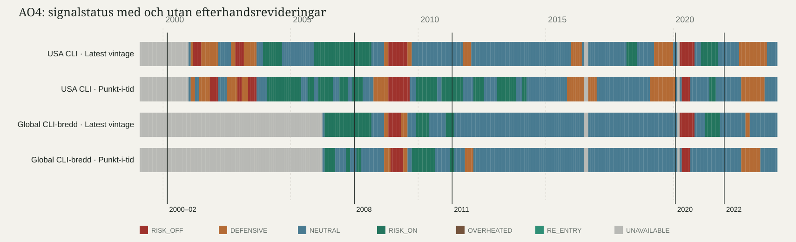

Punkt-i-tid-diagnos · 9 augusti 2026
En tredjedel av proxyhistoriken såg annorlunda ut då.
156 av 485 jämförbara profilmånader, 32,2 procent, fick en annan status när signalen byggdes med den OECD-vintage som faktiskt fanns vid tillfället i stället för dagens reviderade data.
Laggkontroll
1 steg är verklig variation, inte off-by-one
Edition `202001` innehåller data till och med `2019-11` och ger korrekt två månadssteg. Men laggen varierar i källarkivet: USA har 48 editioner med 1 steg och 226 med 2; global breadth har 47 med 1, 153 med 2 och 11 med 3. Medianen över hela respektive proxyhistorik är 2.
Edition `202005` innehåller till och med `2020-04` och ger därför genuint 1 steg. Steget räknas som editionens månad minus senaste användbara referensmånad; ingen inklusiv extramånad läggs till.
Huvudfyndet
Produktionshistoriken kan inte återskapas troget
USA: produktionen väger CLI/BCI/CCI 0,4/0,3/0,3. BCI och CCI saknar arkivvintages, så `usa_cli_only` är en proxy.
Globalt: produktionen väger G20/bredd 0,6/0,4. G20 har bara 13 arkiveditioner, så `global_cli_breadth_only` är en proxy.
Sverige: publika historiska värdevintages saknas. Därmed saknar även syntesen en trogen punkt-i-tid-motsvarighet.
Proxyserier sida vid sida
Senaste reviderade data mot den vintage som fanns då
Grått betyder att profilen inte kunde beräknas. Diagrammet visar inte en punkt-i-tid-version av produktionssyntesen.

De sex timingparen
Hela det lilla urvalet
- USA, 2000–02: latest 2001-02, punkt-i-tid 2001-02, skift 0; referensmånad 2000-12, publiceringssteg 2.
- USA, 2008: latest 2008-09, punkt-i-tid 2008-04, skift −5; referensmånad 2008-02, publiceringssteg 2.
- USA, 2020: latest 2020-04, punkt-i-tid 2020-05, skift +1; referensmånad 2020-04, publiceringssteg 1.
- USA, 2022: latest 2022-08, punkt-i-tid 2022-09, skift +1; referensmånad 2022-08, publiceringssteg 1.
- Global breadth, 2008: latest 2008-09, punkt-i-tid 2008-09, skift 0; referensmånad 2008-07, publiceringssteg 2.
- Global breadth, 2020: latest 2020-04, punkt-i-tid 2020-05, skift +1; referensmånad 2020-04, publiceringssteg 1.
Median +0,5 och medel −0,33 har motsatt tecken. Den ärliga slutsatsen är därför riktning obestämd, inte att realtidssignalen generellt var senare.
Konsekvens för nästa experiment
S3 måste mäta facitinflationen
En möjlig förregistrering är att låsa proxy-punkt-i-tid som primär gren, latest vintage som deklarerad sekundär och skillnaden i prognosprestanda som ett eget mått på hur mycket efterhandsrevideringar blåser upp facit.
Det är ännu inte en låst design. S3 har inte körts.
Revisionsspår
Rapport och maskinläsbart resultat
Point-in-time diagnostic
One third of the proxy history looked different in real time
32.2% of comparable proxy profile-months changed status when calculated from the OECD vintage available at the time. Timing direction is indeterminate: the six shifts have median +0.5 months, mean −0.33 and range −5 to +1. In the key US 2008 episode, point-in-time warned five months earlier than the latest-vintage version.
Publication lag is separate and genuinely variable in the archive. Edition 202001 ends at 2019-11, while edition 202005 includes 2020-04; this is not an off-by-one error.
None of the three published production domains can be reconstructed faithfully: US BCI/CCI lack vintages, the G20 aggregate has only 13 archived editions, and Sweden lacks public historical value vintages. The chart therefore shows two CLI proxies, not the production synthesis.
S3 has not been run. Any preregistration must declare the proxy limitation and separately measure the performance gap between point-in-time and latest-vintage data.